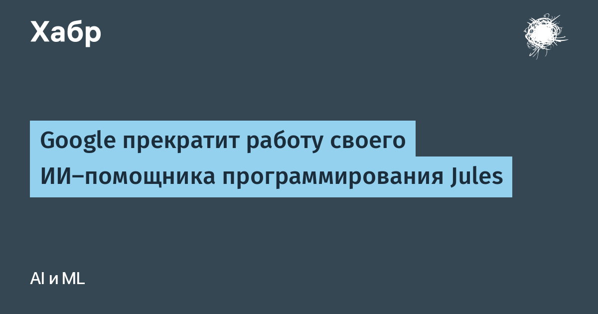

Google официально уведомила пользователей: автономный ИИ-агент для программирования Jules закрывается. Судьба проекта зафиксирована в официальном changelog продукта: до 11 ноября 2026 года можно завершать начатые сессии, после этого Jules переходит в режим «только для чтения», а 31 декабря 2026 года работа платформы полностью прекращается.
В сообщении компании сказано, что это часть объединения агентных разработок: «Мы внедряем опыт, полученный при работе над Jules, в Antigravity». Antigravity — агентная IDE Google, представленная осенью 2025 года вместе с Gemini 3. Внутри неё уже заметили нового агента под названием Chief of Staff. По замыслу Google, объединение должно совместить то, за что ценили Jules (автономное выполнение фоновых задач), со средой разработки, ориентированной на ИИ-агентов.
Проект жил меньше двух лет. Агент работал на облачной виртуальной машине: клонировал репозиторий, ставил зависимости, анализировал кодовую базу, составлял план тестирования и выкатывал PR с проверяемыми патчами — исправления багов, апгрейды зависимостей, миграции между языками и фреймворками. Как писали на Хабре, это был типичный «асинхронный» агент: задачу поставил — результат проверил потом.
Google предлагает полный экспорт: настройки, переменные окружения, запланированные задачи, подключённые репозитории, память агента, установочные скрипты и историю всех сессий с промптами, планами и патчами. Экспорт делается через CLI-утилиту Jules Tools (пакет @google/jules), а сам процесс компания рекомендует поручить… локальному кодовому агенту — например Claude Code, вставив готовый промпт экспорта. Код, ветки и pull request'ы и так лежат в GitHub и остаются на месте.
Ирония закрытия в том, что Jules формально не «неудачник»: Google сама пишет, что эксперимент показал, «куда движется агентная разработка». Просто в большой гонке ИИ-ассистентов даже у Google не хватает терпения держать два параллельных продукта — вместо этого всё сваливают в одну агентную платформу. Пользователям же напомним банальное: агенту, который пишет код от вашего имени, всё равно нужны ваши права на репозиторий — и история с закрытием сервиса лишний раз показывает, чьи данные где хранятся.